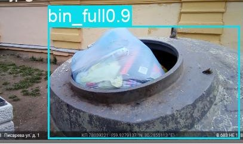
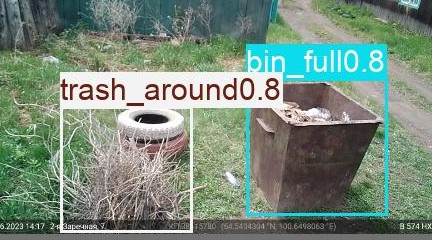

01
AI Vision — Multi-Camera Waste Monitoring
Autonomous monitoring of waste container sites. A custom fine-tuned YOLOv8 watches IP-camera streams for overflowing bins and scattered litter, raises real-time alerts with snapshots, and forecasts overflow probability for the next 24 hours. Six Docker services run the full loop — from frame capture to the operator dashboard.
How it works
- Capture — scheduled snapshots per camera via media server, HLS fallback
- Detect — YOLOv8 inference, priority: trash_around › bin_full › bin_empty
- Alert — events with confidence + snapshot stored and pushed live
- Forecast — gradient boosting retrained weekly, 24h curves per camera